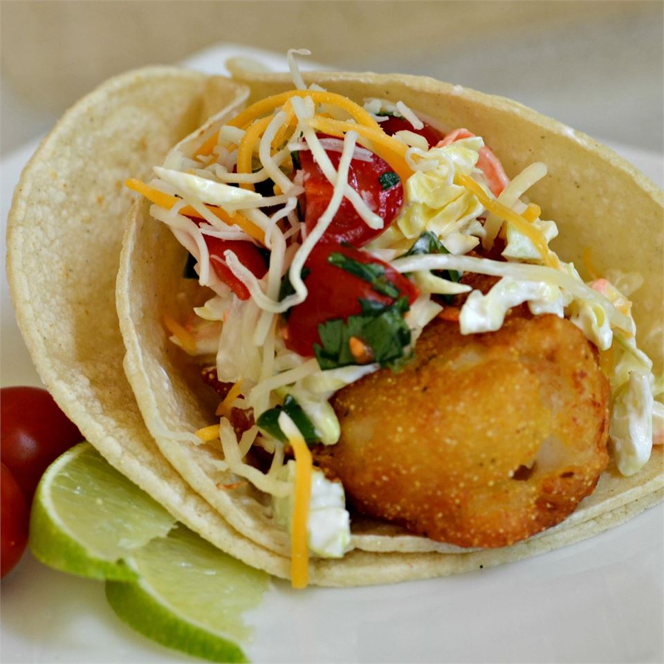

Baja Style Fish Tacos

Authentic local-style recipe straight from Mexico
Get a taste of Mexico with this authentic, easy-to-prepare fish taco recipe. It is inspired from a recent trip to Ensenada, Mexico. Salsa can be made a day in advance for flavors to blend better. Source
Ingredients
- 6 tomatoes, diced
- 1 small onion, diced
- 1/2 cup chopped fresh cilantro
- 2 tablespoons canned diced jalapeno peppers, or more to taste (juice reserved)
- 1/2 teaspoon garlic salt
- 1/2 lime, juiced
- 3 cups coleslaw mix
- 3 tablespoons ranch dressing
- 2 cups vegetable oil for frying
- 1 (9 ounce) box batter mix (such as Shore Lunch®)
- 1 (12 fluid ounce) can or bottle Mexican beer
- 24 corn tortillas
- 1 pound cod fillets, cut into 2-inch chunks
- 2 cups shredded Mexican cheese blend
- 2 limes, sliced into wedges
- 1 dash chile-garlic sauce (such as Sriracha®) (Optional)
Steps
-
Mix tomatoes, onion, cliantro, jalapeno peppers, 1 tablespoon juice from jalapeno peppers, and garlic salt in a bowl; squeeze 1/2 lime over salsa fresca. Cover bowl with plastic wrap and refrigerate while preparing fish.
-
Toss coleslaw mix with ranch dressing in a bowl; set aside for flavors to blend.
-
Heat oil in a deep-fryer or large saucepan to 350 degrees F (175 degrees C).
-
Stir batter mix and beer together in a bowl. Wrap corn tortillas in wet paper towels and set aside.
-
Dip cod in the batter mix; fry coated cod in batches in the hot oil untio cod is cooked through and coating is brown, 4 to 5 minutes. Remove cod with a slotted spoon and drain on a paper towel-lined plate.
-
Microwave corn tortillas on high until warmed, about 1 minute.
-
Stack two tortillas on a place; top with fish, a sprinkle of Mexican cheese, coleslaw mixture, salsa fresca, and a squeeze from lime wedge. Drizzle with chile-garlic sauce. Repeat with remaining ingredients.
Return to main page